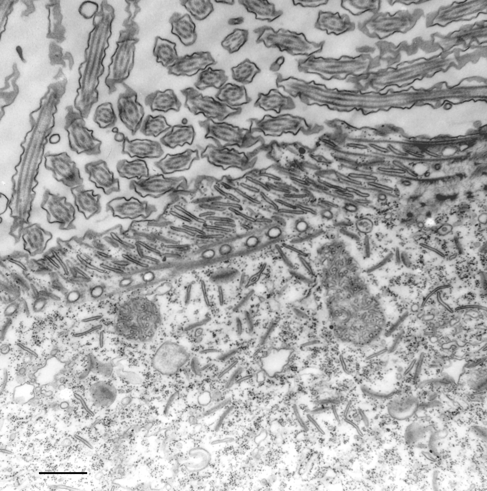

cytostomal cord
A largely unbranched, centrin-containing extension of the infraciliary lattice associated with the cytostome-cytopharynx region, characterized in Paramecium. It is a named fibrillar substructure, not the entire lattice or the adjacent cytopharyngeal microtubular ribbons. [DOI:10.1111/j.1550-7408.1998.tb04526.x]

NCBITaxon:44030) · Richard Allen (University of Hawaii); via Cell Image Library · PUBLIC_DOMAIN · source: CELL_IMAGE_LIBRARY CIL:36704 · DOI:10.7295/W9CIL36704Part of: cellstructuremech:infraciliary_lattice GO:0031912
Components
| Component | Type | Part of / acts on | Grounding | Genes | Stoichiometry | Essential | Role |
|---|---|---|---|---|---|---|---|
| Cytostomal-cord centrins | PROTEIN | part of | REVIEWED_LABEL_ONLY | UNKNOWN | Centrin-family constituents detected by centrin-specific antibody labeling; selective requirements for cord assembly are not established here.
|
Canonical examples
NCBITaxon:5885Paramecium caudatum — Species used for serial-section electron microscopy in the 1974 Methods. The cord is named and described in the Observations; CIL:36779 also documents it. Exact species identifier verified at ENA. [DOI:10.1083/jcb.63.3.904]NCBITaxon:44030Paramecium multimicronucleatum — Organism named by the inspected CIL:36704 TEM record. Source supplies the species name, not a taxid; exact identifier independently verified at ENA. No strain or genus-wide prevalence inferred. [DOI:10.7295/W9CIL36704]
Functions
- Roof of cytopharyngeal vesicle-accumulation spaces — In P. caudatum the cord forms the fibrillar roof of boxlike spaces between cytopharyngeal microtubular ribbons, above the membrane where discoidal vesicles accumulate. This is an observed architectural role, not a demonstrated requirement for vesicle retention, transport, fusion or vacuole release.
DOI:10.1083/jcb.63.3.904Observations on journal pages 913 and 915 place the cord above the ribbon ends and the accumulating vesicles. Discussion on page 918 treats the cord's active function as unresolved.
Discussions
- CURATION_TODO (RESOLVED): Distinguish the named oral cord from the extended infraciliary lattice and other oral or centrin structures. A named localized substructure can have its own record without duplicating its encompassing network.
- CURATION_TODO (OPEN): Resolve cord-specific centrin paralogues, scaffold constituents and selective assembly requirements. Shared immunoreactivity does not establish complete molecular identity or requirements inherited from the whole lattice.
- CURATION_TODO (OPEN): Test whether cord contraction promotes vesicle fusion or release of nascent food vacuoles, and identify the relevant calcium pathway. Static ultrastructure and centrin localization do not demonstrate an active mechanism or necessity.
- CURATION_TODO (RESOLVED): Keep microtubular ribbons, alveolar sacs, striated bands and vesicles outside the cord's molecular composition. Adjacency and shared placement in the oral apparatus do not make other structures constituent proteins or membranes of the cord.
- CURATION_TODO (OPEN): Inspect full 1998 experimental text and compare named cytostomal cords outside Paramecium before extending distribution. Names shared across ciliates do not by themselves establish identical molecular composition or topology.
Evidence
DOI:10.1083/jcb.63.3.904Allen 1974, PMID 4373478, PMC2109358 version 1. Official PDF checksum verified; Methods and cord-specific Observations/Discussion read on PDF pages 2, 10, 12 and 15. PDF pages 15-16 visually inspected. The paper distinguishes observed anatomy from speculative cord function.DOI:10.1111/j.1550-7408.1998.tb04526.xAllen, Aihara and Fok 1998, PMID 9561774. PubMed and publisher-deposited Crossref abstracts read. Publisher PDF returned HTTP 403; full Methods and figures were not inspected.DOI:10.7295/W9CIL36704Source-native caption, public-domain declaration, attribution and organism metadata read; entire TEM inspected. Alveolar-finger association is anatomical evidence; the source explicitly marks the proposed cord contraction and downstream effects as hypothetical.DOI:10.7295/W9CIL36779Source-native caption and entire TEM inspected. P. caudatum cord is distinguished from the curving microtubular ribbons and nearby alveolar extensions. CC BY-NC-SA 3.0 asset is not copied into the repository.GO:0005622Verified non-obsolete intracellular anatomical structure, used only as broad is-a parent.GO:0031912Verified non-obsolete oral apparatus, the encompassing feeding structure; cord location is independently supported by the 1974 primary Observations.
Curation history
2026-10-04T03:03:58Zcodex · CREATED_RECORD — Scaffolded by scripts/new_record.py2026-10-04T03:05:20Zcodex · EXPANDED_RECORD — Added scoped primary anatomy and centrin evidence, part-whole hierarchy, verified examples, architectural role, inspected public-domain TEM and explicit molecular, functional and distribution limits.